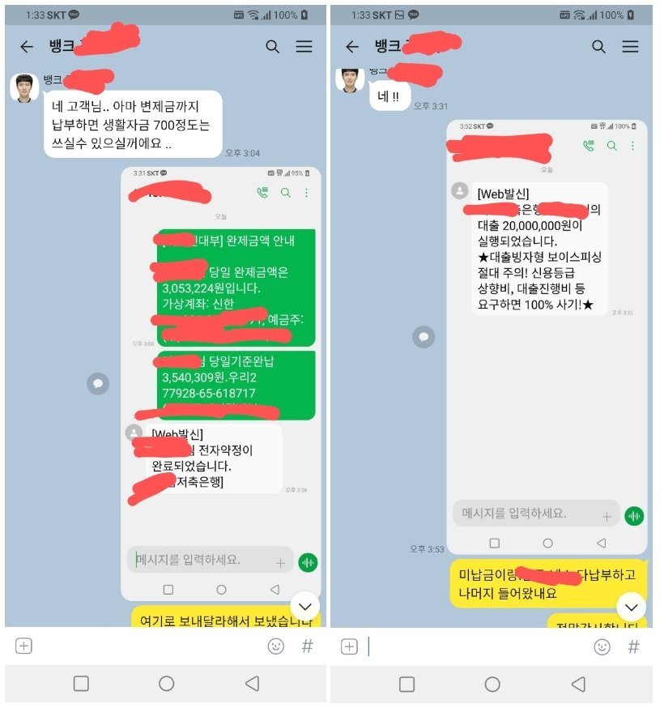

(개인회생자 직장인 대출)김한수 상담사님 감사합니다.
현직장재직:4개월(3개월만근,급여4번 수령) . 세전 211만 수령
기대출: 회생미납 5회(월 103만) . 대부2건 650만원

3개월 미납으로 폐기될수 있다는 문자를 받고 놀래서 부랴부랴 상담을 신청했습니다.
저축은행은 아직 생각도 안했는데 먼저 알아봐주셔서 감동했습니다
서류를 전부 준비하고 제출하고 대기하는중에 안되면 어쩌나 고민이 많았지요
하지만 상담사님께서 안심할수 있게 도움도 주시고,저축은행으로 먼저 알아봐주셔서 감사했습니다
저축은행이 가능할지 생각도 안하고 있었는데,상담전화를 받고 생각보다 한도가 많이 나와서 신청하고
입금받았습니다,미납금 정리하고 대부2건까지 저축은행으로 대환하고 와 진짜 개인회생 폐기될수 있다는 문자에
한번 놀라고 한도가 많이 나옴에 또 한번 놀랬습니다.대단히 감사드리며 관리 잘해 보겠습니다,수고하세용